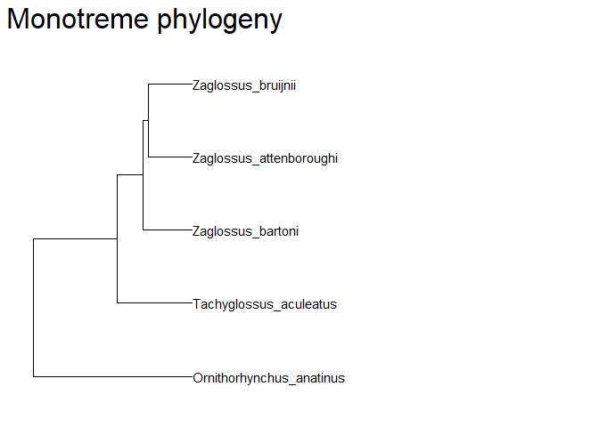
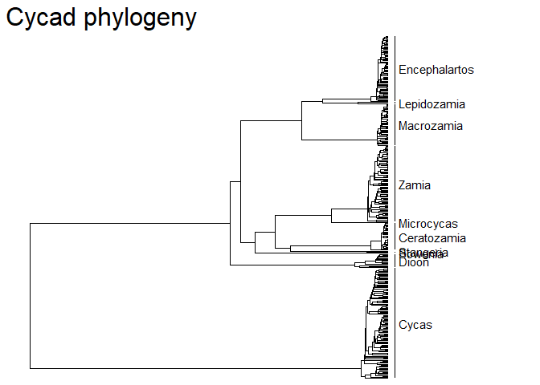

Package to calculate EDGE scores and more phylogenetic-based indicators in R
The EDGE metric is an index that aims to prioritize species’ conservation based on both their phylogenetic singularity (i.e. ED, Evolutionaty Distinctiveness) and their extinction risk (GE, Globally Endangered). Based on this idea, several methods have been developed in order to calculate individual EDGE scores.
rEDGE package
This package was aimed to provide a flexible and accessible software for both researchers and conservation practitioners to include evolutionary history in conservation planning. Thus, we provide with a set of functions which allow users to calculate phylogeny-informed metrics using a variety of parameters. The functions herein included can be divided in 2 groups, namely EDGE score calculating functions (aimed for researchers willing to compile an EDGE ranking), and indicator functions, aimed to report how the conservation of evolutionary history has evolved in several time frames.
Although flexible with some customisable parameters, the rEDGE package is dependent of two central sets of information. First, it needs phylogenetic information. This object must be provided as a ‘phylo’ or ‘multiPhylo’ object. Whenever a single (e.g. consensus) phylogeny is provided, the EDGE metric will be applied to it following the required parameters. Alternatively, if a ‘multiPhylo’ object is provided, rEDGE will apply the function to each individual tree. Results may be summarized after if desired. A second imperative object is a data frame storing Red list assessments for all species in the phylogeny. Besides these, different parameters may apply in each way of measuring the EDGE score for the studied species.
In general, each individual way of calculating the EDGE metric has its own function designed for that specific purpose (see details in the following sections). Nevertheless, there is a wrapper function (i.e. calculate_EDGE()) which incorporates all specific ones (e.g. calculate_EDGE2() or calculate_EDGE1_multiphylo()) by passing through the same parameters.
To illustrate the differences among methods ant their implementationn within rEDGE package, we will see some examples using monotremates (i.e. platypus and echidna species) and cycads. We herein use the monotremate example dataset whenever calculating EDGE scores for a single tree, while the cycad example will be used to incorporate multiPhlo trees (there are 10 different phylogenetic hypotheses), as well as when calculating report indicators (as there are two separate assessments, performed in 2003 and 2014).

| species | RLcat |
|---|---|
| Zaglossus_bartoni | VU |
| Zaglossus_attenboroughi | CR |
| Zaglossus_bruijnii | CR |
| Tachyglossus_aculeatus | LC |
| Ornithorhynchus_anatinus | NT |

| species | RL_2003 | RL_2014 |
|---|---|---|
| Bowenia_serrulata | LC | LC |
| Bowenia_spectabilis | LC | LC |
| Ceratozamia_alvarezii | EN | EN |
| Ceratozamia_becerrae | EN | EN |
| Ceratozamia_brevifrons | VU | VU |
| Ceratozamia_chimalapensis | EN | EN |
| Ceratozamia_decumbens | VU | CR |
| Ceratozamia_euryphyllidia | CR | CR |
| Ceratozamia_fuscoviridis | CR | CR |
| Ceratozamia_hildae | EN | EN |
| Ceratozamia_hondurensis | CR | CR |
| Ceratozamia_huastecorum | CR | CR |
| Ceratozamia_kuesteriana | CR | CR |
| Ceratozamia_latifolia | VU | VU |
| Ceratozamia_matudae | EN | EN |
| Ceratozamia_mexicana | VU | VU |
| Ceratozamia_microstrobila | VU | VU |
| Ceratozamia_miqueliana | VU | CR |
| Ceratozamia_mirandae | EN | EN |
| Ceratozamia_mixeorum | EN | EN |
| Ceratozamia_morettii | EN | EN |
| Ceratozamia_norstogii | EN | EN |
| Ceratozamia_robusta | VU | VU |
| Ceratozamia_sabatoi | EN | EN |
| Ceratozamia_santillanii | CR | CR |
| Ceratozamia_vovidesii | VU | VU |
| Ceratozamia_whitelockiana | EN | EN |
| Ceratozamia_zaragozae | CR | CR |
| Ceratozamia_zoquorum | CR | CR |
| Cycas_aculeata | VU | VU |
| Cycas_aenigma | EW | EW |
| Cycas_angulata | LC | LC |
| Cycas_annaikalensis | CR | CR |
| Cycas_apoa | NT | NT |
| Cycas_arenicola | NT | NT |
| Cycas_armstrongii | LC | VU |
| Cycas_arnhemica | LC | LC |
| Cycas_badensis | NT | NT |
| Cycas_balansae | NT | NT |
| Cycas_basaltica | LC | LC |
| Cycas_beddomei | EN | EN |
| Cycas_bifida | VU | VU |
| Cycas_bougainvilleana | NT | NT |
| Cycas_brachycantha | NT | NT |
| Cycas_brunnea | NT | NT |
| Cycas_cairnsiana | VU | VU |
| Cycas_calcicola | LC | LC |
| Cycas_campestris | NT | NT |
| Cycas_canalis | LC | LC |
| Cycas_candida | EN | EN |
| Cycas_cantafolia | VU | CR |
| Cycas_chamaoensis | CR | CR |
| Cycas_changjiangensis | EN | EN |
| Cycas_chevalieri | NT | NT |
| Cycas_circinalis | VU | EN |
| Cycas_clivicola | LC | LC |
| Cycas_collina | VU | VU |
| Cycas_condaoensis | VU | VU |
| Cycas_conferta | NT | NT |
| Cycas_couttsiana | NT | NT |
| Cycas_cupida | VU | VU |
| Cycas_curranii | CR | CR |
| Cycas_debaoensis | CR | CR |
| Cycas_desolata | VU | VU |
| Cycas_diannanensis | VU | VU |
| Cycas_dolichophylla | NT | NT |
| Cycas_edentata | NT | NT |
| Cycas_elephantipes | EN | EN |
| Cycas_elongata | VU | EN |
| Cycas_falcata | VU | VU |
| Cycas_ferruginea | NT | NT |
| Cycas_fugax | CR | CR |
| Cycas_furfuracea | LC | LC |
| Cycas_glauca | DD | DD |
| Cycas_guizhouensis | NT | VU |
| Cycas_hainanensis | EN | EN |
| Cycas_hoabinhensis | EN | EN |
| Cycas_hongheensis | CR | CR |
| Cycas_indica | EN | EN |
| Cycas_inermis | VU | VU |
| Cycas_javana | EN | CR |
| Cycas_lacrimans | EN | EN |
| Cycas_lane-poolei | LC | LC |
| Cycas_lindstromii | VU | EN |
| Cycas_maconochiei | LC | LC |
| Cycas_macrocarpa | VU | VU |
| Cycas_media | LC | LC |
| Cycas_megacarpa | VU | VU |
| Cycas_micholitzii | VU | VU |
| Cycas_micronesica | NT | EN |
| Cycas_montana | NT | NT |
| Cycas_multipinnata | EN | EN |
| Cycas_nathorstii | VU | VU |
| Cycas_nitida | NT | EN |
| Cycas_nongnoochiae | VU | VU |
| Cycas_ophiolitica | VU | VU |
| Cycas_orientis | LC | LC |
| Cycas_pachypoda | VU | CR |
| Cycas_panzhihuaensis | VU | VU |
| Cycas_papuana | NT | NT |
| Cycas_pectinata | VU | VU |
| Cycas_petraea | NT | NT |
| Cycas_platyphylla | EN | EN |
| Cycas_pranburiensis | VU | VU |
| Cycas_pruinosa | LC | LC |
| Cycas_revoluta | LC | LC |
| Cycas_riuminiana | EN | EN |
| Cycas_rumphii | NT | NT |
| Cycas_sancti-lasallei | EN | EN |
| Cycas_saxatilis | VU | VU |
| Cycas_schumanniana | NT | NT |
| Cycas_scratchleyana | NT | NT |
| Cycas_seemannii | VU | VU |
| Cycas_segmentifida | VU | VU |
| Cycas_semota | VU | VU |
| Cycas_sexseminifera | NT | NT |
| Cycas_shanyaensis | VU | VU |
| Cycas_siamensis | VU | VU |
| Cycas_silvestris | VU | VU |
| Cycas_simplicipinna | NT | NT |
| Cycas_sphaerica | DD | DD |
| Cycas_sundaica | LC | LC |
| Cycas_szechuanensis | CR | CR |
| Cycas_taitungensis | VU | EN |
| Cycas_taiwaniana | EN | EN |
| Cycas_tanqingii | NT | NT |
| Cycas_tansachana | CR | CR |
| Cycas_terryana | VU | VU |
| Cycas_thouarsii | LC | LC |
| Cycas_tropophylla | NT | NT |
| Cycas_tuckeri | VU | VU |
| Cycas_vespertilio | NT | NT |
| Cycas_wadei | CR | CR |
| Cycas_xipholepis | LC | LC |
| Cycas_yorkiana | NT | NT |
| Cycas_zambalensis | CR | CR |
| Cycas_zeylanica | EN | CR |
| Dioon_angustifolium | VU | VU |
| Dioon_argenteum | VU | VU |
| Dioon_califanoi | VU | VU |
| Dioon_caputoi | CR | EN |
| Dioon_edule | NT | NT |
| Dioon_holmgrenii | EN | EN |
| Dioon_mejiae | LC | LC |
| Dioon_merolae | VU | VU |
| Dioon_purpusii | VU | VU |
| Dioon_rzedowskii | VU | EN |
| Dioon_sonorense | EN | EN |
| Dioon_spinulosum | VU | EN |
| Dioon_stevensonii | VU | DD |
| Dioon_tomasellii | VU | VU |
| Encephalartos_aemulans | CR | CR |
| Encephalartos_altensteinii | VU | VU |
| Encephalartos_aplanatus | VU | VU |
| Encephalartos_arenarius | EN | EN |
| Encephalartos_barteri | VU | VU |
| Encephalartos_brevifoliolatus | CR | EW |
| Encephalartos_bubalinus | NT | NT |
| Encephalartos_caffer | NT | NT |
| Encephalartos_cerinus | CR | CR |
| Encephalartos_chimanimaniensis | EN | EN |
| Encephalartos_concinnus | EN | EN |
| Encephalartos_cupidus | CR | CR |
| Encephalartos_cycadifolius | LC | LC |
| Encephalartos_delucanus | VU | EN |
| Encephalartos_dolomiticus | CR | CR |
| Encephalartos_dyerianus | CR | CR |
| Encephalartos_equatorialis | CR | CR |
| Encephalartos_eugene-maraisii | EN | EN |
| Encephalartos_ferox | NT | NT |
| Encephalartos_friderici-guilielmi | NT | NT |
| Encephalartos_ghellinckii | VU | VU |
| Encephalartos_gratus | VU | VU |
| Encephalartos_heenanii | CR | CR |
| Encephalartos_hildebrandtii | NT | NT |
| Encephalartos_hirsutus | CR | CR |
| Encephalartos_horridus | EN | EN |
| Encephalartos_humilis | VU | VU |
| Encephalartos_inopinus | CR | CR |
| Encephalartos_ituriensis | NT | NT |
| Encephalartos_kisambo | EN | EN |
| Encephalartos_laevifolius | CR | CR |
| Encephalartos_lanatus | NT | NT |
| Encephalartos_latifrons | CR | CR |
| Encephalartos_laurentianus | NT | NT |
| Encephalartos_lebomboensis | EN | EN |
| Encephalartos_lehmannii | NT | NT |
| Encephalartos_longifolius | NT | NT |
| Encephalartos_mackenziei | NT | NT |
| Encephalartos_macrostrobilus | EN | EN |
| Encephalartos_manikensis | VU | VU |
| Encephalartos_marunguensis | VU | VU |
| Encephalartos_middelburgensis | CR | CR |
| Encephalartos_msinganus | CR | CR |
| Encephalartos_munchii | CR | CR |
| Encephalartos_natalensis | NT | NT |
| Encephalartos_ngoyanus | VU | VU |
| Encephalartos_nubimontanus | CR | CR |
| Encephalartos_paucidentatus | VU | VU |
| Encephalartos_poggei | LC | LC |
| Encephalartos_princeps | VU | VU |
| Encephalartos_pterogonus | CR | CR |
| Encephalartos_relictus | EW | EW |
| Encephalartos_schaijesii | VU | VU |
| Encephalartos_schmitzii | VU | VU |
| Encephalartos_sclavoi | VU | CR |
| Encephalartos_senticosus | VU | VU |
| Encephalartos_septentrionalis | NT | NT |
| Encephalartos_tegulaneus | LC | LC |
| Encephalartos_transvenosus | LC | LC |
| Encephalartos_trispinosus | VU | VU |
| Encephalartos_turneri | LC | LC |
| Encephalartos_umbeluziensis | EN | EN |
| Encephalartos_villosus | LC | LC |
| Encephalartos_whitelockii | VU | CR |
| Encephalartos_woodii | EW | EW |
| Lepidozamia_hopei | LC | LC |
| Lepidozamia_peroffskyana | LC | LC |
| Macrozamia_cardiacensis | VU | VU |
| Macrozamia_communis | LC | LC |
| Macrozamia_concinna | LC | LC |
| Macrozamia_conferta | VU | VU |
| Macrozamia_cranei | VU | EN |
| Macrozamia_crassifolia | VU | VU |
| Macrozamia_diplomera | LC | LC |
| Macrozamia_douglasii | LC | LC |
| Macrozamia_dyeri | LC | LC |
| Macrozamia_elegans | EN | EN |
| Macrozamia_fawcettii | NT | NT |
| Macrozamia_fearnsidei | LC | LC |
| Macrozamia_flexuosa | EN | EN |
| Macrozamia_fraseri | LC | LC |
| Macrozamia_glaucophylla | LC | LC |
| Macrozamia_heteromera | LC | LC |
| Macrozamia_humilis | VU | VU |
| Macrozamia_johnsonii | LC | LC |
| Macrozamia_lomandroides | VU | EN |
| Macrozamia_longispina | NT | NT |
| Macrozamia_lucida | LC | LC |
| Macrozamia_macdonnellii | LC | LC |
| Macrozamia_machinii | VU | VU |
| Macrozamia_macleayi | LC | LC |
| Macrozamia_miquelii | LC | LC |
| Macrozamia_montana | LC | LC |
| Macrozamia_moorei | NT | NT |
| Macrozamia_mountperriensis | LC | LC |
| Macrozamia_occidua | VU | VU |
| Macrozamia_parcifolia | VU | VU |
| Macrozamia_pauli-guilielmi | EN | EN |
| Macrozamia_platyrhachis | VU | VU |
| Macrozamia_plurinervia | VU | EN |
| Macrozamia_polymorpha | LC | LC |
| Macrozamia_reducta | LC | LC |
| Macrozamia_riedlei | LC | LC |
| Macrozamia_secunda | VU | VU |
| Macrozamia_serpentina | NT | NT |
| Macrozamia_spiralis | EN | EN |
| Macrozamia_stenomera | NT | NT |
| Macrozamia_viridis | EN | EN |
| Microcycas_calocoma | CR | CR |
| Stangeria_eriopus | VU | VU |
| Zamia_acuminata | VU | VU |
| Zamia_amazonum | NT | NT |
| Zamia_amplifolia | CR | CR |
| Zamia_angustifolia | VU | VU |
| Zamia_boliviana | NT | NT |
| Zamia_chigua | NT | NT |
| Zamia_cremnophila | EN | EN |
| Zamia_cunaria | VU | VU |
| Zamia_decumbens | CR | CR |
| Zamia_disodon | CR | CR |
| Zamia_dressleri | EN | EN |
| Zamia_elegantissima | EN | EN |
| Zamia_encephalartoides | VU | VU |
| Zamia_erosa | VU | VU |
| Zamia_fairchildiana | NT | NT |
| Zamia_fischeri | EN | EN |
| Zamia_furfuracea | EN | EN |
| Zamia_gentryi | EN | CR |
| Zamia_gomeziana | VU | VU |
| Zamia_grijalvensis | CR | CR |
| Zamia_hamannii | VU | CR |
| Zamia_herrerae | VU | VU |
| Zamia_hymenophyllidia | CR | CR |
| Zamia_imperialis | EN | CR |
| Zamia_incognita | VU | VU |
| Zamia_inermis | CR | CR |
| Zamia_integrifolia | NT | NT |
| Zamia_ipetiensis | EN | EN |
| Zamia_lacandona | EN | EN |
| Zamia_lecointei | NT | NT |
| Zamia_lindenii | VU | VU |
| Zamia_lindleyi | LC | LC |
| Zamia_loddigesii | NT | NT |
| Zamia_lucayana | CR | CR |
| Zamia_macrochiera | CR | CR |
| Zamia_manicata | NT | NT |
| Zamia_meermanii | EN | EN |
| Zamia_melanorrhachis | EN | EN |
| Zamia_montana | CR | CR |
| Zamia_monticola | CR | CR |
| Zamia_muricata | NT | NT |
| Zamia_nana | EN | EN |
| Zamia_nesophila | EN | CR |
| Zamia_neurophyllidia | VU | VU |
| Zamia_obliqua | NT | NT |
| Zamia_oligodonta | EN | EN |
| Zamia_onan-reyesii | VU | VU |
| Zamia_oreillyi | VU | VU |
| Zamia_paucijuga | NT | NT |
| Zamia_poeppigiana | NT | NT |
| Zamia_portoricensis | EN | EN |
| Zamia_pseudomonticola | NT | NT |
| Zamia_pseudoparasitica | NT | NT |
| Zamia_pumila | NT | NT |
| Zamia_purpurea | CR | CR |
| Zamia_pygmaea | CR | CR |
| Zamia_pyrophylla | CR | CR |
| Zamia_restrepoi | CR | CR |
| Zamia_roezlii | NT | NT |
| Zamia_sandovalii | NT | NT |
| Zamia_skinneri | EN | EN |
| Zamia_soconuscensis | VU | VU |
| Zamia_spartea | CR | CR |
| Zamia_standleyi | VU | VU |
| Zamia_stevensonii | VU | VU |
| Zamia_stricta | VU | VU |
| Zamia_tolimensis | CR | CR |
| Zamia_tuerckheimii | NT | NT |
| Zamia_ulei | NT | NT |
| Zamia_urep | CR | CR |
| Zamia_variegata | EN | EN |
| Zamia_vazquezii | CR | CR |
| Zamia_wallisii | CR | CR |
| Cycas_darshii | NE | NE |
| Zamia_prasina | NE | NE |
| Zamia_verschaffeltii | NE | NE |
This first approach was developed by Isaac et al. (2007). There, the individual EDGE scores were measured using evolutionary distinctiveness (ED) and a transformation of extinction risk (GE) in which each IUCN Red List category is twice as probable of becoming extinct. The EDGE score is calculated using the following formula:
EDGE = log(1+ED)+GE∗log(2)
To calculate this index for monotremates, we just have to use the calculate_EDGE1 function specifying uot phylogenetic tree, and a table including all the tree’s species (in a clomn named species, and their respective IUCN category in a column named RL.cat). Note that all species must be assessed, so if there are species included on the tree and not evaluated (‘DD’, ‘NE’ or ‘NA’), they will not be able to be assigned an EDGE score.
EDGE1 <- calculate_EDGE1(tree = monotreme.tree,
table = monotreme.table,
# species.col = "species", # These are not needed here as our table's names match this default
# RLcat.col = "RLcat", # Same!
sort.list = T # to get the list sorted by decreasing EDGE value
)
knitr::kable(EDGE1)| species | RLcat | ED | EDGE |
|---|---|---|---|
| Zaglossus_attenboroughi | CR | 14.23723 | 5.496331 |
| Zaglossus_bruijnii | CR | 14.23723 | 5.496331 |
| Zaglossus_bartoni | VU | 14.75253 | 4.143296 |
| Ornithorhynchus_anatinus | NT | 29.83242 | 4.121714 |
| Tachyglossus_aculeatus | LC | 18.04178 | 2.946636 |
Alternatively, we can use the wrapper function calculate_EDGE(), specifying to use the EDG1 method, obtaining the same result.
EDGE1 <- calculate_EDGE(tree = monotreme.tree,
table = monotreme.table,
method = "EDGE1",
sort.list = T # to get the list sorted by decreasing EDGE value
)If we do not have a unique phylogenetic hypothesis (e.g. a consensus tree), but multiple equiprobable phylogenies (for example, multiple trees obtained when inferring a phylogeny, or coming from a phylogeny expansion), EDGE scores can be calculated individually for each tree. The only requirement id for the phylogenetic object (now ‘multitree’ instead of ‘tree’) to be a ‘multiPhylo’ class object.
As this process is independent to each tree, we can parallelize it (parallelize = TRUE) to use multiple computer cores at the same time (we can specify hoy many at the n.cores parameter). If no value (or more than available) is set, then it will use all but one available cores. By default, rEDGE will run sequentially (i.e. not parallelizing).
Additionally, we can ask the function to summarise our results, or else return a list with each individual result data frame. If asked to summarise (default), rEDGE will calculate some parametric (mean and standadr devoation) and non-paramentric (median and 0.25-0.75 interquartile ranges), both for ED and EDGE values
EDGE1_mult <- calculate_EDGE1_multiphylo(multitree = cycad.multitree,
table = cycad.table,
RLcat.col = "RL_2014", # Now needed as we are not using the default name for RL info
sort.list = T, # to get the list sorted by decreasing EDGE value
parallelize = F,
# n.cores = NULL, # Not needed as we are running sequential
summarise = T
)
knitr::kable(head(EDGE1_mult))| species | RLcat | EDmn | EDsd | EDmed | EDiqr | EDGEmn | EDGEsd | EDGEmed | EDGEiqr |
|---|---|---|---|---|---|---|---|---|---|
| Microcycas_calocoma | CR | 30.460684 | 0.0000000 | 30.460684 | 0.0000000 | 6.221327 | 0.0000000 | 6.221327 | 0.0000000 |
| Stangeria_eriopus | VU | 51.699861 | 0.0000000 | 51.699861 | 0.0000000 | 5.350907 | 0.0000000 | 5.350907 | 0.0000000 |
| Dioon_spinulosum | EN | 20.585451 | 0.0000000 | 20.585451 | 0.0000000 | 5.151461 | 0.0000000 | 5.151461 | 0.0000000 |
| Dioon_rzedowskii | EN | 18.187219 | 0.0000000 | 18.187219 | 0.0000000 | 5.033686 | 0.0000000 | 5.033686 | 0.0000000 |
| Cycas_zeylanica | CR | 7.726895 | 0.8544905 | 8.005929 | 0.0273349 | 4.933780 | 0.1128901 | 4.970472 | 0.0030356 |
| Cycas_hongheensis | CR | 8.297875 | 2.0098169 | 7.974525 | 1.9394479 | 4.982857 | 0.2046339 | 4.966850 | 0.2243257 |
Same as before, we can use the wrapper function calculate_EDGE(). As we are using now a ‘multiPhylo’ object, rEDGE knows it has to run the multiPhylo version of the function.
EDGE1_mult <- calculate_EDGE(cycad.multitree, # Just use a 'multiPhylo' object
cycad.table,
method = "EDGE1",
RLcat.col = "RL_2014", # Now needed as we are not using the default name for RL info
sort.list = T, # to get the list sorted by decreasing EDGE value
parallelize = F,
# n.cores = NULL, # Not needed as we are running sequential
summarise = T
)In 2023, Gumbs et al. developed an updated version of the EDGE metric, termed EDGE2, which incorporates the extinction probability of closely related taxa into the ED facet, as well as uncertainty in species’ probability of extinction.
In this new approach, a random probability of extinction is sampled from a continuous distribution based on its IUCN Red List category, therefore results may slightly vary every time the function is ran.
EDGE2 <- calculate_EDGE2(tree = monotreme.tree,
table = monotreme.table,
sort.list = T, # to get the list sorted by decreasing EDGE value
verbose = F)
knitr::kable(EDGE2)| species | RLcat | TBL | pext | ED | EDGE |
|---|---|---|---|---|---|
| Zaglossus_attenboroughi | CR | 8.147095 | 0.9999000 | 10.32435 | 10.3233135 |
| Zaglossus_bruijnii | CR | 8.147095 | 0.9475487 | 10.44464 | 9.8968025 |
| Ornithorhynchus_anatinus | NT | 29.832422 | 0.1276786 | 29.83242 | 3.8089632 |
| Zaglossus_bartoni | VU | 9.177698 | 0.2200911 | 14.63263 | 3.2205119 |
| Tachyglossus_aculeatus | LC | 14.111567 | 0.0523888 | 17.38978 | 0.9110299 |
# Alternatively, it can also be ran within the wrapper function
EDGE2 <- calculate_EDGE(tree = monotreme.tree,
table = monotreme.table,
method ="EDGE2",
sort.list = T, # to get the list sorted by decreasing EDGE value
verbose = F)Nevertheless, there are several parameters we can incorporate to EDGE2 analyses. First, we can define a random seed to assure replicability of results (using parameter seed). Also, we can modify the probability function were extinction probabilty is sampled from. By default, the function uses “Isaac” distribution (defined in Isaac et al., 2007), where every category is twice as probabe of becoming extinct than its predecessor. However, other probability functions were defined in Mooers et al. (2008) namely “IUNC50”,“IUNC100” and “IUNC500”, which can be incorporated in the ext.prob parameter. Last, we can obtain not only an EDGE list, but also a probabilty of extinction-weighted tree plus an expected PD loss value from the EDGE2 analysis. Although not commonly needed, they can be retrieved if parameter return.all is set to TRUE. Last, if we do not specify it otherwise (with verbose = FALSE), the function will output some messages and print the current progress status (especially useful for large datasets).
EDGE2_ext <- calculate_EDGE2(tree = monotreme.tree,
table = monotreme.table,
sort.list = T,
ext.prob = "IUCN50",
return.all = FALSE,
verbose = F, # Not used here as printing is not optimized for a website
seed = 123456 # Using a same seed, we should always get an identical result
)
knitr::kable(EDGE2_ext)| species | RLcat | TBL | pext | ED | EDGE |
|---|---|---|---|---|---|
| Zaglossus_bruijnii | CR | 8.147095 | 0.9577910 | 9.740928 | 9.3297733 |
| Zaglossus_attenboroughi | CR | 8.147095 | 0.9327228 | 9.783765 | 9.1255404 |
| Zaglossus_bartoni | VU | 9.177698 | 0.1310127 | 13.802169 | 1.8082597 |
| Tachyglossus_aculeatus | LC | 14.111567 | 0.0154356 | 15.951546 | 0.2462222 |
| Ornithorhynchus_anatinus | NT | 29.832422 | 0.0001000 | 29.832422 | 0.0029832 |
# And also in th wrapper function!
EDGE2_ext <- calculate_EDGE(tree = monotreme.tree,
table = monotreme.table,
method = "EDGE2",
sort.list = T,
ext.prob = "IUCN50",
return.all = FALSE,
verbose = F, # Not used here as printing is not optimized for a website
seed = 123456 # Using a same seed, we should always get an identical result
)Exactly as we did for EDGE1, if we use a multiPhylo object instead of a phylo one, we can calculate EDGE2 metrics for each individual tree. Function parameters and use are identical as explained before, just specifying to use EDGE2 in the specific or wrapper function. As a note, results summarizing across trees is not enabled in case return.all is set to TRUE, but a list of length equal to the number of trees will be returned.
EDGE2_multiphy <- calculate_EDGE2_multiphylo(multitree = cycad.multitree,
table = cycad.table,
RLcat.col = "RL_2014",
sort.list = T,
seed = 92442,
verbose = F
)
knitr::kable(head(EDGE2_multiphy))| species | RLcat | TBLmn | pextmed | pextiqr | EDmn | EDsd | EDmed | EDiqr | EDGEmn | EDGEsd | EDGEmed | EDGEiqr |
|---|---|---|---|---|---|---|---|---|---|---|---|---|
| Microcycas_calocoma | CR | 29.421050 | 0.9667424 | 0.1645995 | 29.421050 | 0.0000000 | 29.421050 | 0.0000000 | 27.031599 | 2.909191 | 28.442577 | 4.8426900 |
| Stangeria_eriopus | VU | 50.759524 | 0.2401154 | 0.0726685 | 50.759524 | 0.0000001 | 50.759524 | 0.0000002 | 12.774807 | 2.154786 | 12.188144 | 3.6886175 |
| Cycas_pachypoda | CR | 4.448163 | 0.9561873 | 0.1692407 | 6.402405 | 3.4562819 | 7.392971 | 5.2314162 | 5.764793 | 3.170266 | 6.857173 | 4.6610448 |
| Zamia_hymenophyllidia | CR | 4.003738 | 0.9999000 | 0.0085765 | 7.202246 | 2.2625227 | 7.556170 | 3.4260785 | 6.849319 | 2.075468 | 6.659720 | 2.7117550 |
| Dioon_spinulosum | EN | 14.691371 | 0.4434341 | 0.1536457 | 14.755517 | 0.0259739 | 14.757158 | 0.0180991 | 7.069747 | 1.627890 | 6.534273 | 2.2693241 |
| Cycas_zeylanica | CR | 5.670791 | 0.9704345 | 0.0512931 | 5.826520 | 1.2693475 | 6.232883 | 0.0000004 | 5.534270 | 1.274864 | 6.048604 | 0.7868939 |
# And also in th wrapper function!
EDGE2_multiphy <- calculate_EDGE(cycad.multitree,
table = cycad.table,
RLcat.col = "RL_2014",
sort.list = T,
seed = 92442,
verbose = F
)As the EDGE2 score is iteration-dependent (i.e. there is a random factor in the sampling of extinction probabilty), the EDGE2 score calculation can be ran independently a number of times and summarised posteriorly. This multiple calculation is performed by calculate_EDGE2_multiple function, which also allows to parallelize in order to speed computation times. In this case, the evolutionary information stays identical, but probability of extinction varies across replicates. This function also enables the incorporation of a multiPhylo object, so we could apply both probability of extinction and phylogenetic uncertainty into EDGE score calculations. In these examples we are calculating EDGE scores 10 times (although we recommend using larger number of replicates), and averaging the results after.
In case we want to use the wrapper function, we just have to specifying a number of iterations in n.iter. This applies both to ‘phylo’ and ‘multiPhylo’ objects (note that in case no n.iter value is specified, a simple calculate_EDGE2() is ran).
EDGE2mult <- calculate_EDGE2_multiple(tree = monotreme.tree,
table = monotreme.table,
n.iter = 10,
sort.list = T,
parallelize = TRUE,
n.cores = 10,
verbose = F,
seed = 314159
)
# Identical but in wrapper function...
EDGE2mult_wr <- calculate_EDGE(tree = monotreme.tree,
table = monotreme.table,
method = "EDGE2",
n.iter = 10,
parallelize = TRUE,
n.cores = 10,
verbose = F,
seed = 314159
)
# Also working for a 'multiPhylo'
EDGE2mult_multiphylo <- calculate_EDGE2_multiple(cycad.multitree,
table = cycad.table,
RLcat.col ="RL_2003",
n.iter = 5,
parallelize = TRUE,
n.cores = 10,
verbose = F,
seed = 314159
)
# And 'multiPhylo' in the wrapper
EDGE2mult_multiphylo_wr <- calculate_EDGE(tree = cycad.multitree,
table = cycad.table,
RLcat.col ="RL_2003",
method = "EDGE2",
n.iter = 5,
parallelize = TRUE,
n.cores = 10,
verbose = F,
seed = 314159
)In case we do not want a summarised report of EDGE scores, but want to retrieve individual EDGE lists and obtain other statistics, we can do it by asking the functions not to bind results together, and do it after by ourselves. Here is an example of how we do it. To do so, we will use as toy example 3 cycad trees (as a multiPhylo), and do 5 EDGE2 iterations.
my.results <- calculate_EDGE(tree = cycad.multitree[1:3], # By subsetting we keep just a three-tree multiPhylo
table = cycad.table,
species.col = "species", # Not really needed, as we use the default
RLcat.col = "RL_2003", # This one is needed, as we are not using the default (i.e. 'RLcat')
n.iter = 5, # For each tree, calculate 5 extinction probability values
summarise = F, # Do not summarise, as we will do it by ourselves!
seed = 123,
verbose = F
)
# my.results is not a data frame, but a list with all the results stored!
class(my.results)
#> [1] "list"
# Now we can extract and combine results
my.results_df <- bind_rows(my.results)
# Now we have individual results, but see how we have a column specifying which tree and iteration each value comes from:
str(my.results_df)
#> 'data.frame': 5055 obs. of 8 variables:
#> $ species: chr "Cycas_taitungensis" "Cycas_lane-poolei" "Cycas_revoluta" "Cycas_hoabinhensis" ...
#> $ RLcat : chr "VU" "LC" "LC" "EN" ...
#> $ TBL : num 3.69 3.69 5.48 11.97 2.18 ...
#> $ pext : num 0.3083 0.0581 0.0575 0.4275 0.0211 ...
#> $ ED : num 3.82 4.36 5.6 11.97 2.94 ...
#> $ EDGE : num 1.1767 0.2535 0.3225 5.1175 0.0622 ...
#> $ tree : int 1 1 1 1 1 1 1 1 1 1 ...
#> $ iter : int 1 1 1 1 1 1 1 1 1 1 ...
# Now we can summarise results as we want.
# For example, I am going to extract the median, maximum and minimum values of EDGE for each species (different to the summarised by default)
my.results_df_summ <- my.results_df |>
group_by(species) |> # This makes the summary to summarise values for each species!
summarise(EDGEmean = mean(EDGE), # Use whichever function you want! (min(), max(), mean(), median(), sd(), etc...)
EDGEmax = max(EDGE),
EDGEmin = min(EDGE)) |>
arrange(desc(EDGEmean)) # This is used to sort the summarised list by descending EDGEmean
kable(head(my.results_df_summ))| species | EDGEmean | EDGEmax | EDGEmin |
|---|---|---|---|
| Microcycas_calocoma | 26.862165 | 29.418108 | 21.200673 |
| Stangeria_eriopus | 11.368336 | 16.595730 | 8.711753 |
| Zamia_hymenophyllidia | 8.785175 | 10.598029 | 5.761166 |
| Zamia_amplifolia | 6.296160 | 10.598031 | 3.143093 |
| Zamia_spartea | 6.116954 | 7.318005 | 3.855826 |
| Cycas_hongheensis | 5.413346 | 9.717520 | 1.550379 |